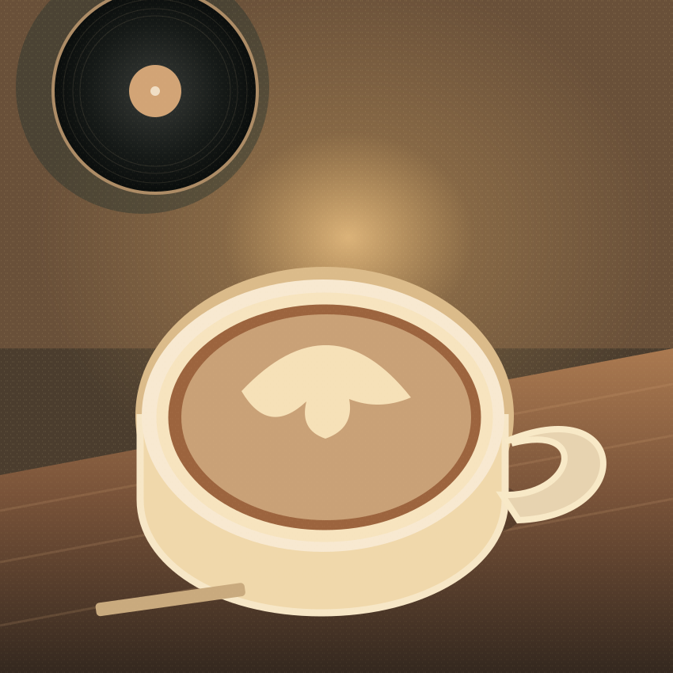

LIVERPOOL · ROPEWALKS
TAKE A
MINUTE.
LISTEN.
Speciality coffee by day. Records and drinks by night. A listening room for taking your time on Gradwell Street.
01 / THE IDEA
A ROOM MADE
FOR LISTENING.
Kiku takes inspiration from Japanese listening cafés: places where the music matters as much as what’s in your cup.
Vintage hi-fi, carefully selected records and an unhurried pace. Start with a coffee. Stay to hear what comes next.
Meet the sound02 / THROUGH THE DAY
TWO SIDES.
ONE ROOM.
Different drinks. Same good sound. Pick your time of day to see what makes Kiku, Kiku.
THE FIRST SIDE / COFFEE BY DAY
COFFEE.
AND THE
GOOD STUFF.
Speciality coffee, pastries and records played the way they were meant to be heard. Find a seat and stay a while.
See the latest at Kiku
DAY / A-SIDEMenu and availability can change. Check the venue's Instagram for current details.
03 / HEAR THE ROOM
NOT JUST
BACKGROUND
MUSIC.
Vintage hi-fi equipment and a DJ programme are central to the experience. Kiku is a place to listen, not a record shop.
04 / COME IN
FIND YOUR
FREQUENCY.
Kiku Hifi
Gradwell Street, Ropewalks
Liverpool L1 4JH
DAYTIME COFFEE.
EVENING LISTENING.
Check Instagram for current hours, DJ sessions and changes to service before heading over.